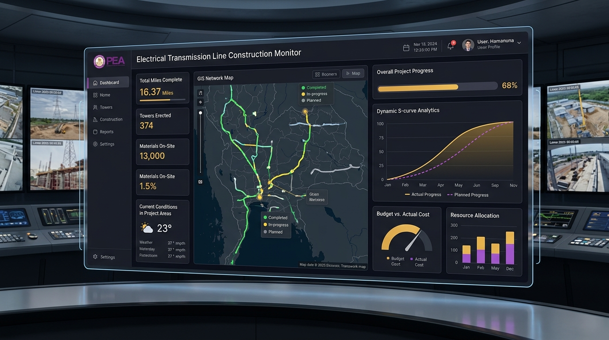

LIVE DASHBOARD
S-CURVE / GIS
01
Dashboard สถานะงานก่อสร้างสายส่งและสถานีไฟฟ้า
dashboard-constrution-report.vercel.appศูนย์รวมรายงานและสถิติภาพรวมความก้าวหน้าโครงการก่อสร้างสายส่งและสถานีไฟฟ้าทั่วประเทศ ติดตาม % แผนงานเทียบผลงานจริง (S-Curve) แผนที่โครงการแบบ GIS และสรุปผลสำหรับผู้บริหาร
ติดตามความก้าวหน้ารายโครงการและรายสัญญาแบบเรียลไทม์
กราฟวิเคราะห์ S-Curve แผนงาน vs ผลงานจริง
แผนที่พิกัดแนวสายส่งและที่ตั้งสถานีไฟฟ้า (GIS Network)